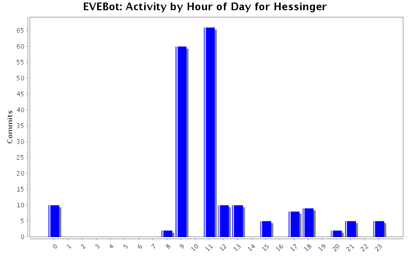
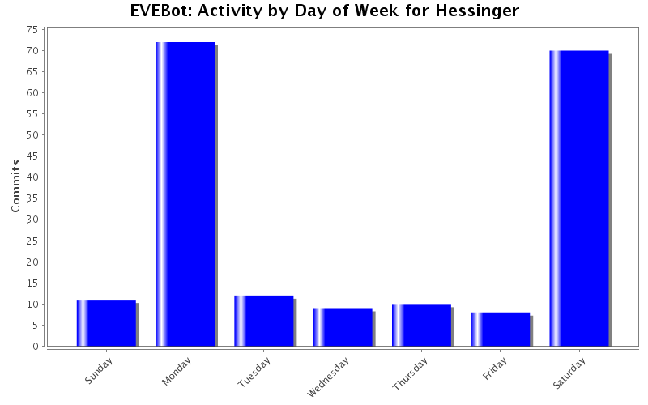
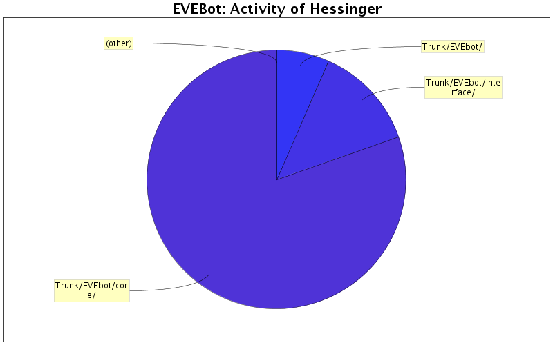

| Directory | Changes | Lines of Code | Lines per Change |
|---|---|---|---|
| Totals | 69 (100.0%) | 2046 (100.0%) | 29.6 |
| Trunk/EVEbot/core/ | 48 (69.6%) | 1649 (80.6%) | 34.3 |
| Trunk/EVEbot/interface/ | 9 (13.0%) | 267 (13.0%) | 29.6 |
| Trunk/EVEbot/ | 12 (17.4%) | 130 (6.4%) | 10.8 |

47 lines of code changed in 1 file:
Revision Focus:
Shield Booster Activation Requests
Fixed Numerous Bugs in Configuration and UI
Social.iss
- Fixed NPCDetection
- Added PossibleHostile Member
Configuration.iss
- Added Shield Booster Activation Member/Method
Miner.iss
- Removed Shield Booster Activation
Ship.iss
- Added Shield Booster Activation Support
UI
- Fixed numerous bugs/typos and cleaned up combat tab.
- Added Shield Activation Slider.
154 lines of code changed in 7 files:
- Reset time on downtime script to 10:50
2 lines of code changed in 1 file:
- Fixed downtime script.
4 lines of code changed in 1 file:
- Quick Fixes for last rev
19 lines of code changed in 3 files:
- Added Mine Alone Options (Working)
- Added Mine Alone: Standing Detection (Needs Testing, but appears to be functional)
- Fixed typos in config file, and updated todo list.
114 lines of code changed in 4 files:
- Fixed Typo In Miner Variables
- Added Obj_Social.iss to prepare for player/npc detection options (dunno if your working on this cyber)
- Fixed typos in obj_Skills.iss
170 lines of code changed in 5 files:
3 lines of code changed in 1 file:
Soooo yeah.... Lets try not to be to sensitive about this rev... shall we cyber?.. Its 2am in the morning and I don't know which end of my bed looks more comfortable... anyways... I got multiple unfinished projects going on here in this rev... but heres whats going on..
Obj_Skills: Completed, working on pulse... no-ui support though
Obj_Combat: Dunno wtf I changed there... -.-
Obj_Configuration: just a bunch of settings and stuff and all the goodies that go in a configuration file
obj_Miner: think I added some stuff in there for testing drone resupply, it should be commented out because isxeve needs to support a DroneBay ID.
obj_Station: same dealio... with miner..., will organize and put in right place when isxeve supports...
GUI: added some stuff... derrhhhh
539 lines of code changed in 10 files:
28 lines of code changed in 1 file:
136 lines of code changed in 2 files:
- Development Revision
Added Skeleton for Fighter Bot (Included XML Update)
Added Skeleton for Branches of Combat: Defense and Offense
Removed old Combat File
208 lines of code changed in 5 files:
.95 rev 168
- Basic Combat Object Introduction
- Fail Safe Run [UI Combat Child]
- Drone Combat
- Combat Targeting
115 lines of code changed in 7 files:
20 lines of code changed in 1 file:
had to pull an old file because I deleted the one i worked on this morning, read the previous few rev notes about the combat file... and its instructions... sorry about the many rev changes.
159 lines of code changed in 1 file:
wrong combat file
0 lines of code changed in 1 file:
Added obj_Combat.iss
Please read previous rev notes
159 lines of code changed in 1 file:
- Combat
- Adds a non-function targeting support (debugging needed)
- Adds Drone Combat Support
- Adds pauses to asteroid and mining files while in combat targeting.
----------------------------------------------------
- To test or attempt to debug; you can uncomment -
- whats in the ship pulse and or create a new way -
- of calling up Combat.Fight, in the the file I -
- Made a note of where the bot crashes when trying -
- have fun, because I gave up on trying to get it -
- work. / Hessinger -
----------------------------------------------------
36 lines of code changed in 4 files:
- Hotfix for Mining Drone Support.
0 lines of code changed in 1 file:
1 lines of code changed in 1 file:
(3 more)